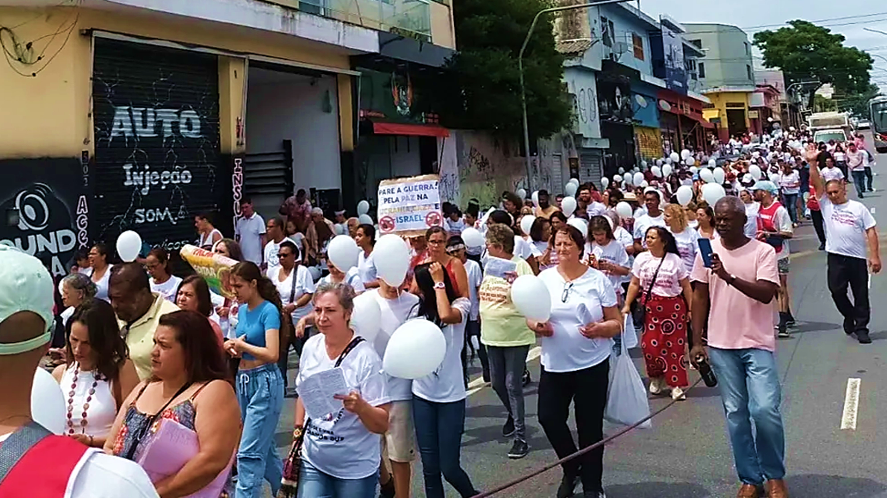
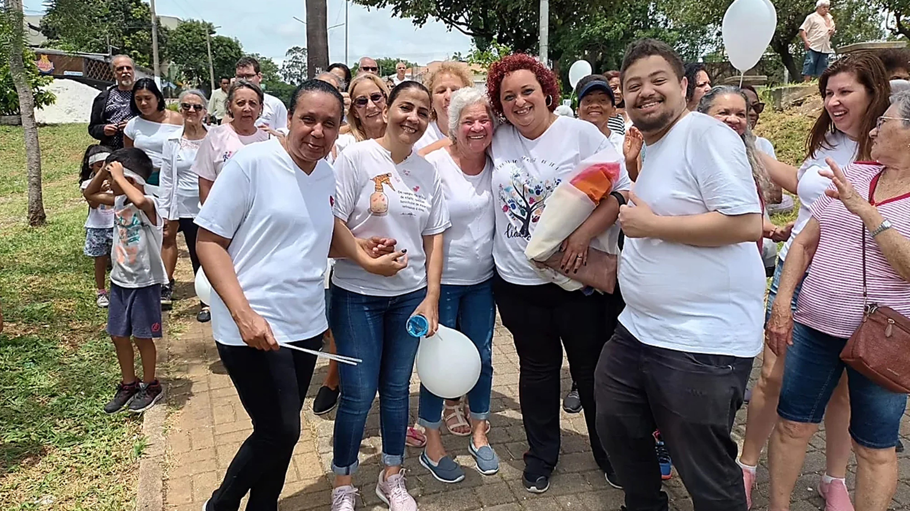

O encontro, que teve início no ano passado, surgiu através da necessidade de abordar a violência na região e promover uma convivência pacífica entre os moradores, contando com o apoio das religiões e lideranças comunitárias para enfrentar esse desafio pela paz. A partir da organização e reunião da comunidade do Jardim IV Centenário / Jardim Imperador e região, a ideia foi caminhar numa manhã de sábado para a promover a paz e valorizar a vida, dizendo “não a violência”.
A primeira edição da Caminhada da Paz ocorreu no dia 28 de Outubro de 2023, partindo da Praça Catas Altas, percorrendo toda a Avenida Luis Pires de Minas, fazendo algumas paradas estratégicas ao longo da avenida e também na Praça Miguel Ramos de Moura (Praça do Vinho) para intervenções artísticas e culturais, e também para algumas falas dos grupos presentes, tendo seu encerramento na Praça Cataguarino.
Participaram do encontro algumas organizações sociais da região, como o CCP Santa Úrsula, o CEC Itápolis e o Instituto Mater Dei, espaços religiosos de todos os segmentos, como a Paróquia São Paulo Apóstolo, a Igreja Batista e a Associação Kardecista Casa do Caminho Irmã Sheila, além da comunidade em geral, onde todos caminharam unidos em prol da paz, sem distinção de cor, religião, orientação sexual, idade ou sexo.
Durante toda a caminhada, foram realizadas intervenções musicais, culturais e artísticas, realizadas pelos grupos presentes na caminhada, fazendo algumas paradas para a exposição de falas que reforçam a cultura da paz, da união e da não violência. Os participantes foram envolvidos durante todo o trajeto da caminhada por músicas temáticas, apresentações de poesias, rodas de capoeira e coreografias apresentadas pelo grupo "Afoxé Filhos do Cacique", que contribuíram para o ambiente animado e acolhedor.
Neste ano, o encontro ocorrerá de forma semelhante, contando com a participação de toda a
comunidade da nossa região para, mais uma vez, caminharmos para cultivar a paz para todos.
Através deste encontro, é possível unir pessoas que possuem muitas diferenças entre si, mas
que tem um desejo em comum: dizer NÃO para a violência e SIM para a paz no Jardim IV Centenário
e toda a região.
VENHA! PARTICIPE CONOSCO!